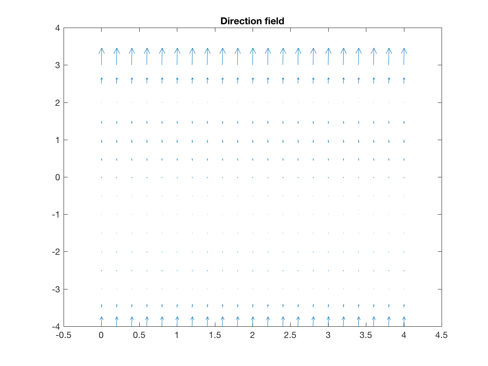
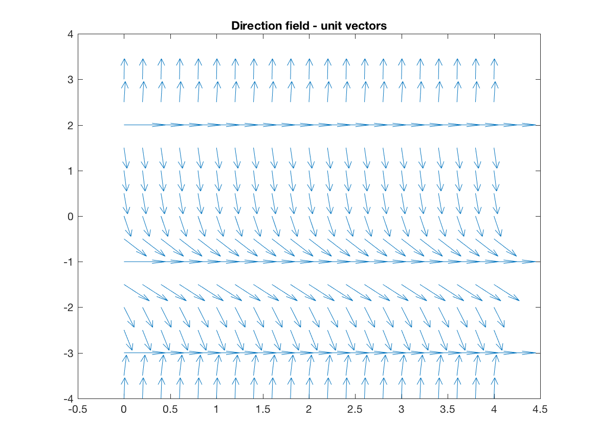
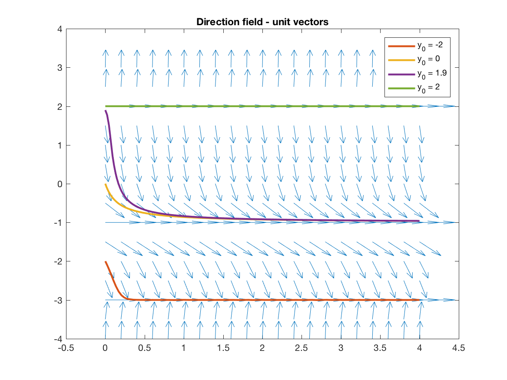

Takeaways
- Direction fields show us in what direction the function is changing at a given point
- By following the field lines, we can trace solutions to the ODE
- We can find equilibrium solutions and analyze their stability by looking at whether field lines are going into or away from an equilibrium
- Stable solution: field lines converge to the equilibrium from all directions
- Unstable solution: field lines go away from the equilibrium from all directions
- Semi-stable solution: field lines go into the equilibrium from some directions and away from it in others
Direction Fields and Quiver Plots
The primary tool we use for analyzing ODEs graphically is a direction field. Recall the most general form of a first order ODE:
\[ f(x,y,y’) = 0 \]
This means that for every \((x,y)\) pair in a possible solution to the ODE, there is a \(y'\) satisfying the above equation. A direction field plots out the \(y'\) vectors as a function of \(x\) and \(y\). This allows us to analyze the qualitative features of solutions, which we discuss below.
(As an aside, we call this view of ODEs a geometric view of ODEs since we are really looking at the shape and direction of the changes in the function and not so much the function value itself. Indeed, if you pursue studying ODEs on a theoretical level, you will encounter a large body of research applying geometry—the theoretical math field—to the study of differential equations.)
We create direction fields for ODEs by using the quiver() function in MATLAB. (quiver() gets it’s name from the fact it draws arrows for the function’s field lines. Haha, get it? They’re so clever.)
Consider the system of ODEs:
\[\begin{align*} \frac{dx}{dt} = y\cos(x) \\ \frac{dy}{dt} = y\sin(x) \\ \end{align*}\]The syntax to plot the direction field with the quiver() function (from the Mathworks website) is:
% Create grid of points where you want arrows
[x,y] = meshgrid(0:0.2:2,0:0.2:2);
u = cos(x).*y; % Create dx component
v = sin(x).*y; % Create dy component
figure % Plot using quiver()
quiver(x,y,u,v)Let’s apply this to a simpler example. Consider the ODE:
\[y' = (y - 2)(y+1)^2(y+3)\]To create the quiver plot, we would write:
clear all, close all % Clear workspace and close all graphs
% Create grid of points where you want arrows
[x,y] = meshgrid(0:0.2:4,-4:0.5:3);
% dx is not specified in the ODE, so set equal to 1
u = ones(size(x));
% Create dy component
v = (y - 2).*(y+1).^2.*(y+3);
figure % Plot using quiver()
quiver(x,y,u,v)
title('Direction field')This produces the plot below:

Now hold on a second—why did we just write u = 1 in the code above? Why are we treating \(y'\) as a vector, except in the ODE it’s a scalar? Well, when we think about \(y'\), we’re talking about
That is, \(y'\) represents the ratio between the change in \(x\) and the change in \(y\). When we’re plotting with quiver(), we really want to see \(y'\) for the field lines. To do this, we can simply set \(dx = 1\) at all points for the field lines.
If this feels a bit hacky or contrive, don’t worry—it is. There’s a more mathematically rigorous explanation for how this works, but I believe the rigorous explanation is needlessly complex for where we’re at right now and would just obscure what we’re trying to get from direction fields. In the end, the explanation I’ve given is equivalent to the rigorous one, and you can use it for now.
Notice how the field lines in the plot above become incredibly small in some regions, to the point they are difficult or impossible to make out. Field lines are kinda useless if we can’t actually see what direction they’re pointed, so sometimes it is more useful to normalize the field lines to be unit vectors. We can do this with code such as:
% Clear workspace and close all graphs
clear all, close all
% Create grid of points where you want arrows
[x,y] = meshgrid(0:0.2:4,-4:0.5:3);
u = ones(size(x));
v = (y - 2).*(y+1).^2.*(y+3);
mags = sqrt(u.^2 + v.^2); % Compute magnitudes
uhat = u ./ mags; % Divide x component by magnitude
vhat = v ./ mags; % Divide y component by magnitude
% Plot using quiver()
figure
quiver(x,y,uhat,vhat)
title('Direction field - unit vectors')which produces the plot:

Much better.
Field Lines and ODEs
So, why does all of this stuff about field lines matter for ODEs? Direction fields are useful when studying ODEs because if we trace along the field lines, we can find a solution to the ODE, which then lets us characterize certain properties about those solutions. Specifically, we want to be able to find equilibrium solutions and analyze their stability.
Let’s start with that first part: if we trace along the field lines, we can visualize solutions to the ODEs. An example of this is shown in the figure below. Notice how different initial conditions causes the solution to converge to different steady state solutions.

These steady state solutions are known as equilibrium solutions (or stationary points, in some texts). A equilibrium is a function value such that when \(y\) is at that value, the derivative is \(0\). It is an equilibrium because the system is at a steady state at that solution i.e. the system is balanced such that it does not change.
Equilibria: We can easily find equilibrium points visually by looking at where the field lines are flat. (This is why the vector field with the field lines normalized to unit vectors can be useful.) In this example, the field lines are flat for \(y = -3, -1, 2\), so these must be the equilibrium solutions. Indeed, for \(y = 2\), we see that when \(y(0) = 2\), the function stays at that value and doesn’t move (hence the solution being a stationary point).
Stability: Observe that the solutions converge to some of the equilibria, but go away from other equilibria. Whether or not field lines will go towards or away from a solution is known as the stability of a solution. We say an equilibrium is stable if the field lines converge towards the equilibrium, unstable if they point away from the equilibrium, and semi-stable if they converge from one direction and point away from the other. In this example, \(y = -3\) is stable, \(y = -1\) is semi-stable, and \(y = 2\) is unstable.
Mathematically, the idea behind stability is if we perturb the solution away from the equilibrium, does it return to the same equilibrium? The answer lies with the sign of \(y'\) near the equilibrium point.
If we perturb \(y\) to be a bit smaller but the derivative is positive, then the solution returns to the same equilibrium point. (Try this with the field lines in the figure above.) Similarly, if we make \(y\) a bit larger but the derivative for \(y > y^*\) is negative, then the solution returns back to the equilibrium solution \(y^*\). This is what characterizes a stable solution: the derivative is positive for \(y < y^*\) and negative for \(y > y^*\) so that the solution returns to \(y^*\) when it is perturbed. Essentially, for a stable solution the sign of the derivative is opposite the sign of the perturbation in \(y\).
If we make \(y\) a bit smaller and the derivative is negative, the solution will move away, and similarly if we make \(y\) a bit larger and \(y' > 0\), then the solution moves away. This characterizes an unstable solution: if we perturb the solution a bit away from \(y^*\), the solution flies away from \(y^*\).
Finally, we have the most confusing one: semi-stable solutions. However, these aren’t confusing at all in reality. Semi-stable solutions are just solutions where they are stable on one side and unstable on the other. That is, if we perturb the solution in one direction it returns to \(y^*\), but if we perturb in the other it flies away. Mathematically, this translates to the sign of the derivative being the same on both sides of the equilibrium. (We observe this with \(y^* = -1\) above.)
To sum up, we can classify the stability of an equilibrium point \(y^*\) as:
- Stable: \(y'\) is positive for \(y < y^*\) and negative for \(y > y^*\)
- Unstable: \(y'\) is positive for \(y > y^*\) and negative for \(y < y^*\)
- Semi-stable: \(y'\) has the same sign on both side of \(y^*\)
Autonomous Systems
A autonomous system (when we’re talking about ODEs, not robotics) is a system where the change in system state is only determined by its current state. Suppose we can explicitly write down \(y'\):
\[y' = f(x,y)\]If \(y'\) does not depend on \(x\) i.e.:
\[y' = f(y)\]then the system is autonomous. This definition seems trivial, but this is extremely important for the next section finding equilibrium solutions.
Analytically Solving for Equilibria and Determining Stability
While it’s well and good to talk about visual properties of direction fields or their qualitative features, the fact is you are also taking a class in ODEs and need to be able to solve quantitative problems on exams and homeworks. This brings us to this last section: solving for equilibrium solutions and determining their stability.
If you have understood the previous sections, this last part is really just putting them together into an algorithm for solving problems related to stability of solutions. Remember that an equilibrium solution is just a value of \(y\) such that \(y'(y) = 0\). (Here, we are only considering autonomous systems since you usually won’t be expected to find equilibria for non-autonomous systems.)
To find equilibrium solutions, we just need to find the zeros of \(y'\). This is easy, since in this class \(y'\) will almost always be a polynomial in \(y\) or something similarly easy to find zeros of. After finding the zeros, we need to determine the sign of the derivative between the equilibria. However, we can do this simply by picking points in between the equilibria and finding the rate of change at these points. Once we determine the sign of the derivative between the equilibrium points and outside of the end points, we can determine the types of equilibrium points using the principles described in the previous part.
So, the final algorithm for solving problems with equilibrium solutions and stability is:
- Find zeros of the derivative (i.e. find \(y\) such that \(y' = 0\))
- Pick values in between and outside the equilibria and find the sign of the derivative at these values
- Classify the equilibria according to the rules listed above
This is a bit involved, so to solidify everything let’s go through an example problem together. Consider the example from the previous section:
\[y' = (y - 2)(y+1)^2(y+3)\]First, we find the zeros. This polynomial is already factored for you, so it’s pretty easy: we have \(y^* = -3, -1, 2\).
Next, we need to pick values between and outside the equilibria to determine which way the derivative is pointing. To do this, we’ll pick \(y = -4, -2, 0, 3\). (To keep your life easy, always try to pick integers since this will make the arithmetic a lot simpler.) After picking the values, we need to find the sign of the derivative at these points:
\[\begin{align} y'(-4) &= (-4 - 2)(-4+1)^2(-4+3) > 0 \\ y'(-2) &= (-2 -2)(-2 + 1)^2(-2+3) < 0 \\ y'(0) &= (0-2)(0+1)^2(0 + 3) < 0 \\ y'(3) &= (3 - 2)(3 + 1)^2(3 + 3) > 0 \end{align}\]Note here that we don’t actually need to find the exactly value of the derivative, just the sign. This small change will save you a significant amount of computation time during an exam.
Now that we have the sign of the derivative in between the equilibria, we classify the points according to their signs:
- \(y = -3\) has plus on the left and minus on the right, so it is a stable equilibrium
- \(y = -1\) has the same sign on both sides, so it is a semi-stable equilibrium
- \(y = 2\) has minus on the left and plus on the right, so it is an unstbale equilibrium
These results match up with what we found above, but with no field lines or other plotting necessary. Pretty simple, yea? Maybe not, but on an exam you don’t have access to quiver() or Wolfram, so this approach will take you far.